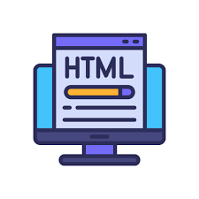

Contoh
Heading
Heading digunakan untuk memberikan judul, Sub Judul, Topik dan lain sebagainya. Heading terdiri dari heading1 (h1) - heading6 (h6)
Contoh
Paragraf
Paragraf digunakan untuk membuat tulisan. Sebuah paragraf selalu dimulai dari baris baru dan di browser akan otomatis menambahkan jarak atas dan bawah antara paragraf.
Contoh
Text Formatting
Text formatting bisa digunakan untuk merubah gaya teks seperti, miring, tebal, di coret, di highlight, dan lain sebagainya.
Contoh
List
List digunakan untuk format tulisan prosedural. List terbagi menjadi 2 ada ordered list dan ada juga unordered list. Ordered list mengeluarkan output default angka. Sedangkan unordered list mengeluarkan output default bullets.
Contoh